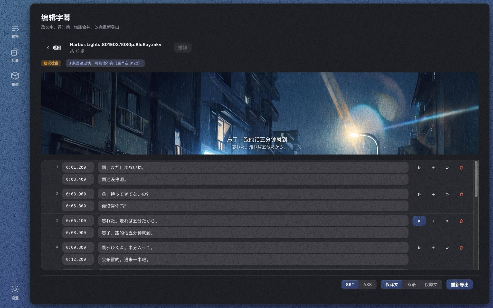
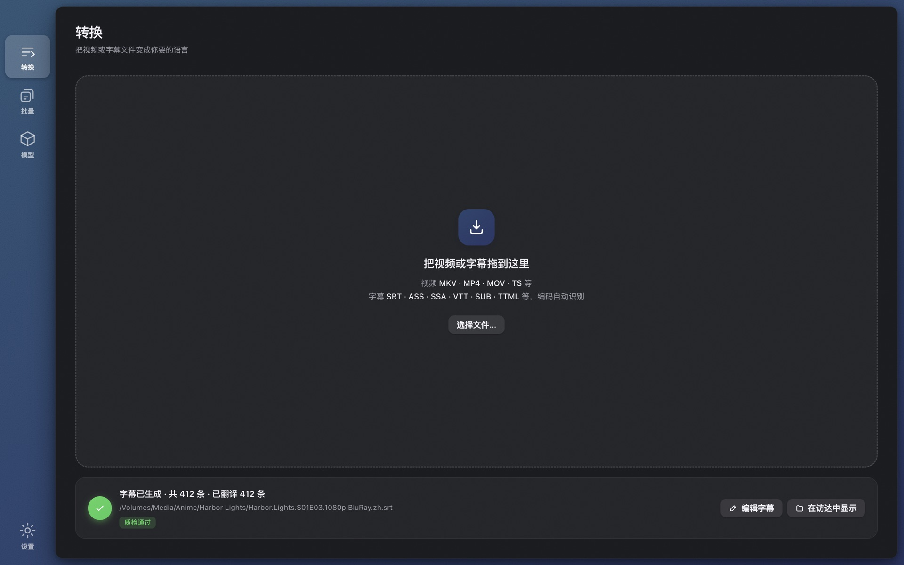
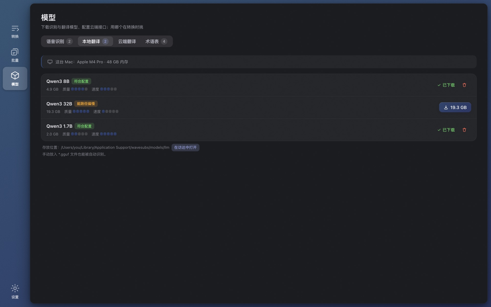
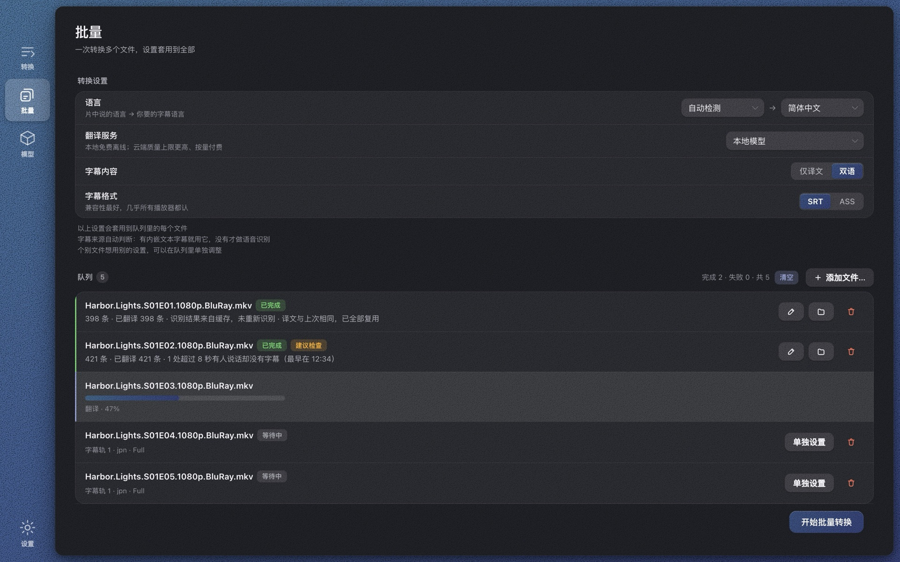

Wave Subs 从视频里识别对白，生成 SRT / ASS 字幕，并自动翻译成你的语言。全部在你自己的电脑上完成——无需联网，完全免费。

字幕编辑器：改文字、调时间，点任意一行直接听这句话
不用先去找字幕站，不用上传视频，不用注册账号。
MKV、MP4、MOV、TS 都行。如果影片里本来就有内嵌字幕轨，会自动识别并直接使用。
whisper.cpp 在你的电脑上识别对白，自动检测语种；时间轴按真实说话时刻精修，参数用六部整片对照官方字幕校准过。
译成你的语言，导出 SRT 或 ASS，放到影片旁边，任何播放器都认。跑完附带质检结论，告诉你哪里值得看一眼。

译成你的语言，导出 SRT 或 ASS，放到影片旁边，任何播放器都认。跑完附带质检结论，告诉你哪里值得看一眼。

目标语言有 29 种：中文简繁、英、日、韩、法、德、西、葡、俄、泰、越、印尼、马来……默认用本地运行的 Qwen3 模型，免费、不联网；也可以接入任何 OpenAI 兼容接口。
改文字、调时间、增删合并、撤销、自动保存。点任意一行，直接听这句话怎么说的——HEVC、DTS 这类浏览器播不了的格式，随包的 ffmpeg 也能解出来。质检发现可以点击跳转。

把一个文件夹拖进来，全部文件用同一套设置，需要的那几个再单独指定字幕轨、音轨或引擎。跑完的每一行都带质检结论。
在线字幕工具要你把整部影片传上去。Wave Subs 什么都不发出去。
版本 1.0.1。ffmpeg 与 whisper.cpp 已随包附带，装完就能用，不需要另装任何东西。
首次使用会引导下载识别模型（1.6～3 GB，之后不再需要联网）。开源组件许可见 THIRD-PARTY-LICENSES。
MKV、MP4、MOV、TS、AVI 等常见格式都可以；HEVC、DTS、TrueHD 这类浏览器播不了的编码也没问题，因为随包的 ffmpeg 什么都能解。纯音频文件同样可以。
识别支持 whisper 覆盖的近百种语言并自动检测；翻译目标语言 29 种，包括中文简繁、英、日、韩、法、德、西、葡、俄、泰、越、印尼、马来等；界面有 32 种语言。
识别、对齐、翻译、编辑、导出全部本地完成。只有两件事用到网络：第一次下载模型，以及你自己选择配置云端翻译。
M 系列芯片上用 Large v3 Turbo 大约 3～6 分钟，加上本地翻译再多几分钟。整季批量可以挂着跑。
识别用的是 whisper large 系列模型；时间轴用语音活动检测和响度分析贴回真实说话时刻，参数对照六部整片的官方字幕校准。每个文件跑完会附带质检结论，哪里可疑直接告诉你。
会自动发现内嵌的文本字幕轨并优先使用，直接进入翻译，比识别更快更准。图形字幕（PGS/VobSub）除外。
目前不支持。本地识别依赖 Apple Silicon 的 Metal 加速，Intel 机器上慢到不实用。
Windows 版尚未购买代码签名证书，SmartScreen 会对新程序提示。点"更多信息 → 仍要运行"即可；校验值在 GitHub Releases 页。
在线工具要你上传整部影片、按分钟计费、通常有时长上限。Wave Subs 不上传、不收费、不限时长，速度取决于你的电脑。